Mythology
Home
Goddesses
Trojan War
Argonauts
Hades and Persephone
Calypso
Fates
Furies
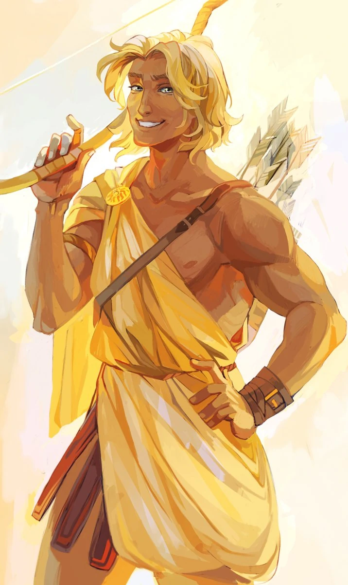
Apollo is the god of archery, sun, healing, prophecies, poetry, dancing, truth, knowledge, and music. He is the son of Zeus and Leto. His symbols are bow and rrows, a lyre, a raven, rays of light radiating from his head, the branch of laurel, and a wreath.
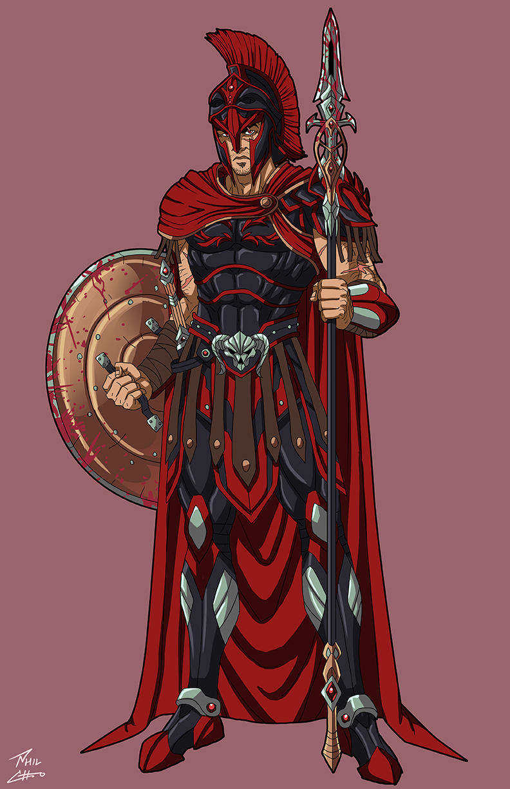
Ares is the god of war and courage. He is the son of Zeus and Hera. His symbols are a sword, a spear, a shield, and a helmet.
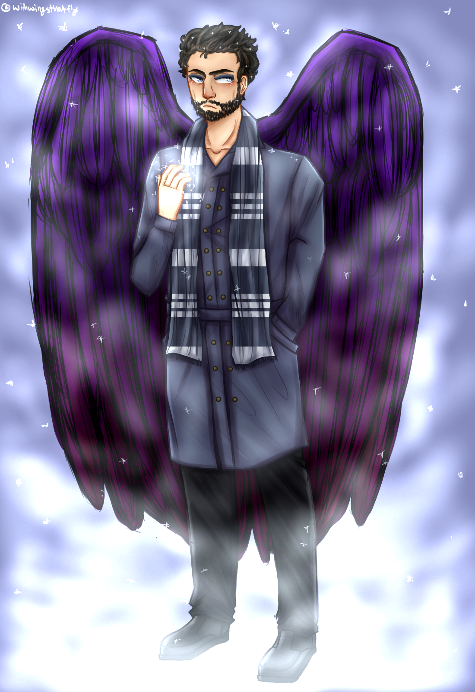
Boreas is the god of the north wind. He is the son of Astraeus and Eos. His symbol is two faces.
Dionysus is the god of wine, ectasy, and pleasure. He is the son of Zeus and Semele. His symbols are a grapevine, some ivy, and a chalice.
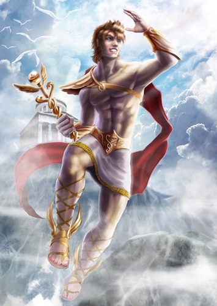
Hermes is the god of trade, thieves, travelers, sports, athletes, border crossings, and guide to the Underworld. He is the son of Zeus and Maia. His symbols are a tortoise, a lyre, and a winged helmet.
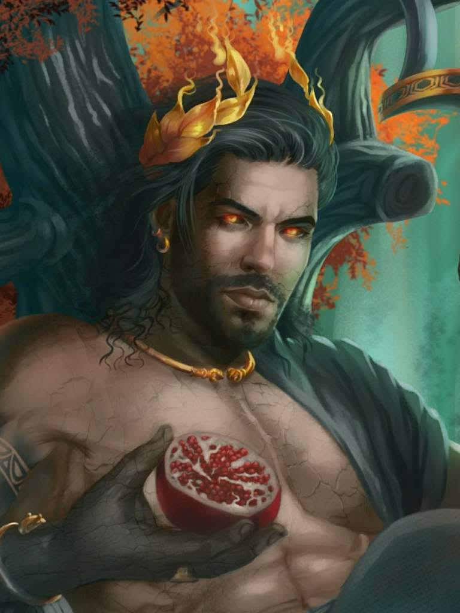
Hades is the god of wealth and the Underworld. He is the son of Uranus and Gaea. His symbols are a narcissus flower, a serpent, and a pomegranate.
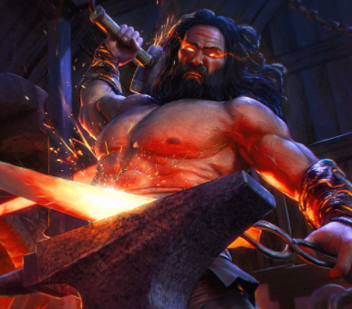
Hephaestus is the god of fire, the forge, blacksmithing, metalwworking, and masonry. He is the son of Zeus and Hera. His symbols are a a blacksmith's hammer, an anvil, and a pair of tongs.
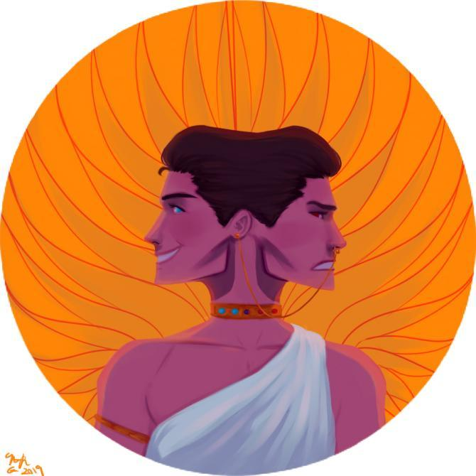
Janus is the god of choices, endings, and doorways. He is the son of Uranus and Gaea. His symbol is two faces.
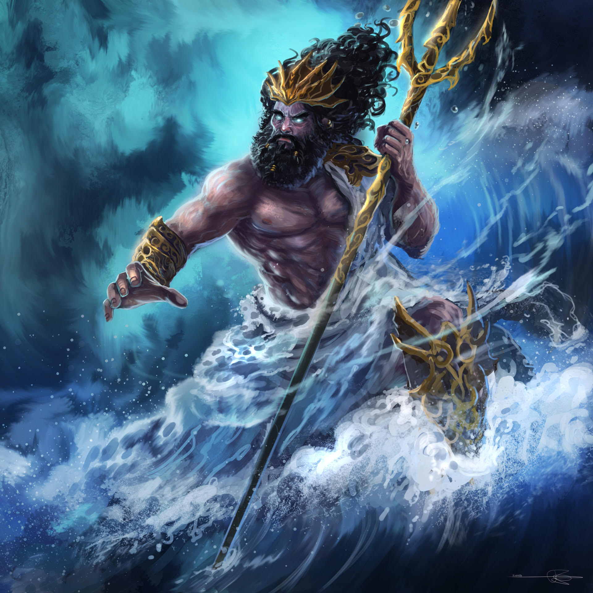
Poseidon is the god of the seas, water, earthquaes, and horses. He is the son of Uranus and Gaea. His symbol is a trident.
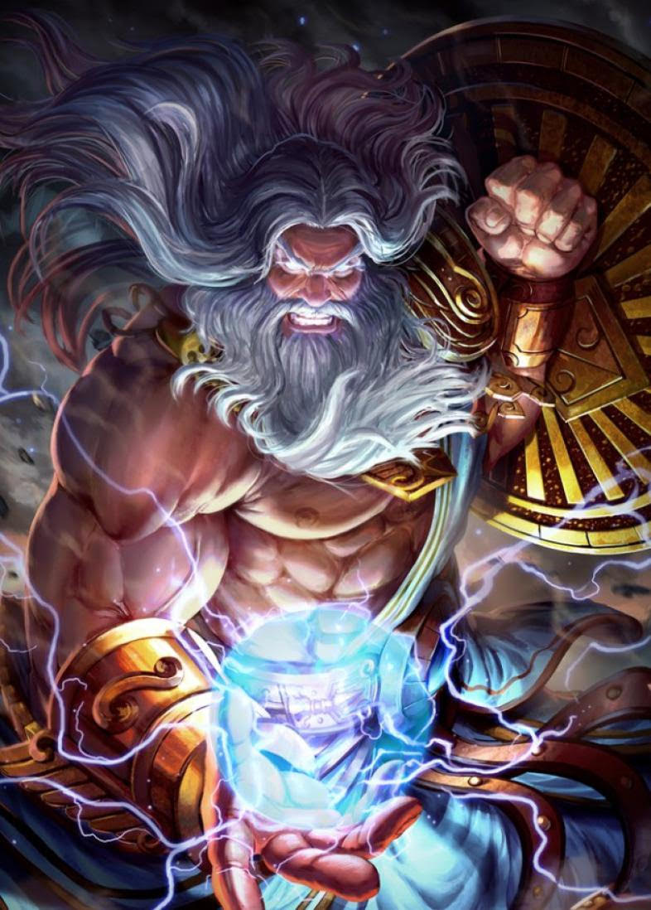
Zeus is the god of the sky. He is the son of Uranus and Gaea. His symbols are Thunderbolt and an eagle.
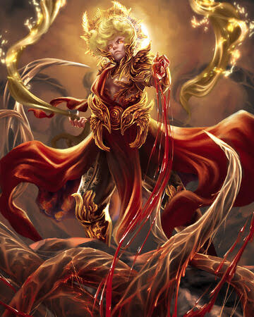
Phoebus is the god of archery, sun, healing, prophecies, poetry, dancing, truth, knowledge, and music. He is the son of Jupiter and Latona. His symbols are bow and rrows, a lyre, a raven, rays of light radiating from his head, the branch of laurel, and a wreath.
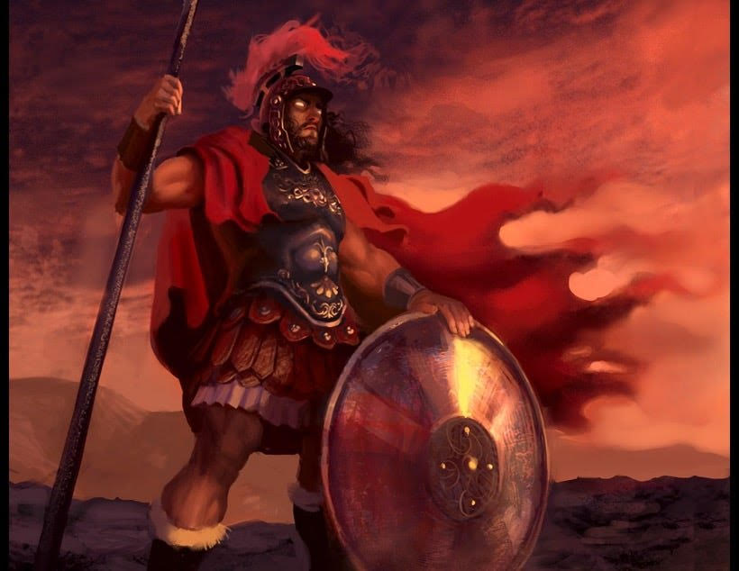
Mars is the god of war and courage. He is the son of Jupiter and Juno. His symbols are a sword, a spear, a shield, and a helmet.
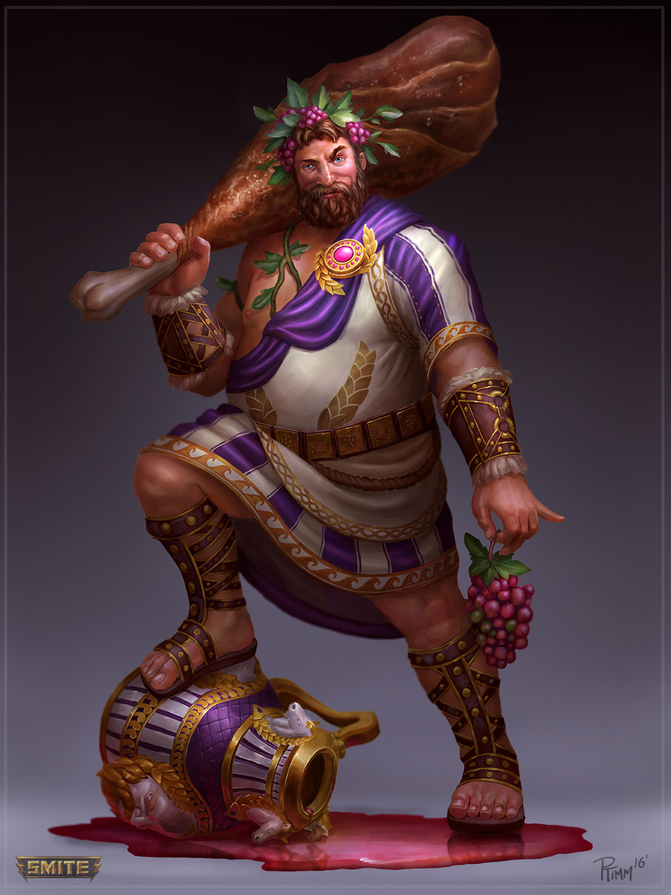
Bacchus is the god of wine, ectasy, and pleasure. He is the son of Jupiter and Thyone. His symbols are a grapevine, some ivy, and a chalice.
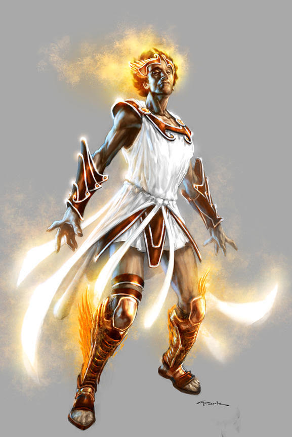
Mercury is the god of trade, thieves, travelers, sports, athletes, border crossings, and guide to the Underworld. He is the son of Jupiter and May. His symbols are a tortoise, a lyre, and a winged helmet.
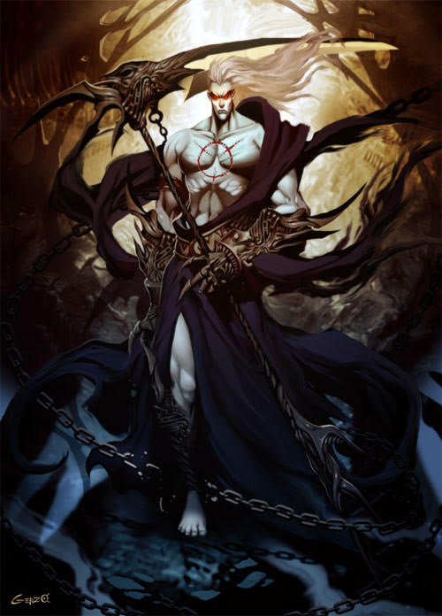
Pluto is the god of wealth and the Underworld. He is the son of Caelus and Terra. His symbols are a narcissus flower, a serpent, and a pomegranate.
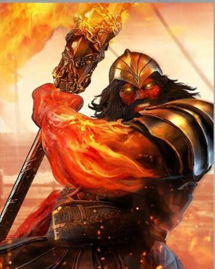
Vulcan is the god of fire, the forge, blacksmithing, metalwworking, and masonry. He is the son of Jupiter and Juno. His symbols are a a blacksmith's hammer, an anvil, and a pair of tongs.
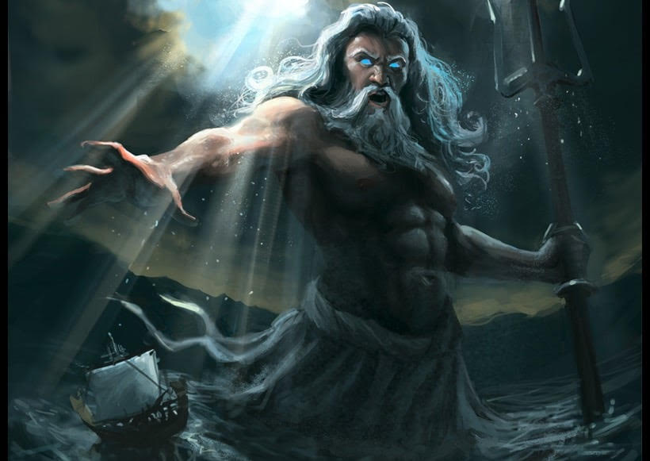
Neptune is the god of the seas, water, earthquaes, and horses. He is the son of Caedus and Terra. His symbol is a trident.
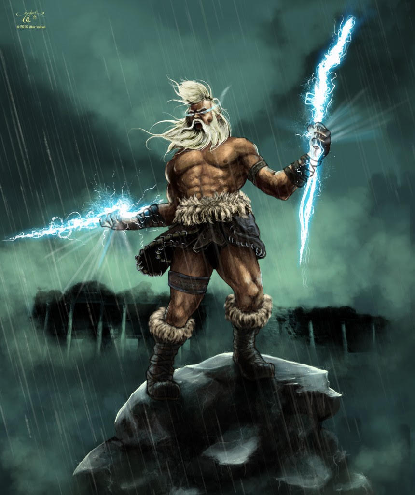
Jupiter is the god of the sky. He is the son of Caedus and Terra. His symbols are Thunderbolt and an eagle.
Aquilo is the god of the north wind. He is the son of the son of Astraios and Aurora. His symbols are a grapevine, some ivy, and a chalice.
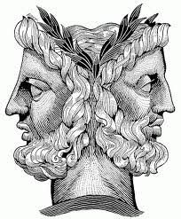
Ianuarius is the god of choices, endings, and doorways. He is the son of Caelus and Terra. His symbol is two faces.